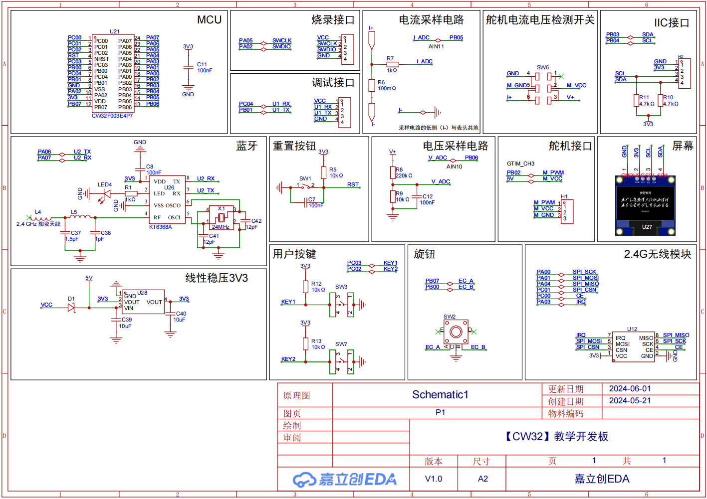

<!DOCTYPE lake>
<h2 data-lake-id="qebuP" id="qebuP"><span data-lake-id="u7f742327" id="u7f742327">功能需求</span></h2><ul list="ud55efe76"><li data-lake-id="u145c4b78" fid="udf2e9f66" id="u145c4b78"><span data-lake-id="u2d2f0826" id="u2d2f0826">控制舵机输出，进行机械控制</span></li><li data-lake-id="u6c0e2b6a" fid="udf2e9f66" id="u6c0e2b6a"><span data-lake-id="ub21dd670" id="ub21dd670">检测舵机输出电压电流，避免堵转</span></li><li data-lake-id="ucf2abeee" fid="udf2e9f66" id="ucf2abeee"><span data-lake-id="uebbfd515" id="uebbfd515">屏幕显示舵机角度&amp;PID参数等</span></li><li data-lake-id="u9dedc123" fid="udf2e9f66" id="u9dedc123"><span data-lake-id="u46971562" id="u46971562">旋钮、按键调整参数值</span></li><li data-lake-id="u138d0446" fid="udf2e9f66" id="u138d0446"><span data-lake-id="u4417781f" id="u4417781f">串口、蓝牙、2.4G通信</span></li><li data-lake-id="u5258897f" fid="udf2e9f66" id="u5258897f"><span data-lake-id="uf6d98f49" id="uf6d98f49">烧录调试引脚</span></li><li data-lake-id="u6283e910" fid="udf2e9f66" id="u6283e910"><span data-lake-id="u30c82605" id="u30c82605">串口调试引脚</span></li><li data-lake-id="u237b3f4b" fid="udf2e9f66" id="u237b3f4b"><span data-lake-id="u67340416" id="u67340416">5V供电</span></li></ul><h2 data-lake-id="hR6pP" id="hR6pP"><span data-lake-id="uf69ca4c8" id="uf69ca4c8">功能拆解</span></h2><ul list="ua02e2cd3"><li data-lake-id="uf02b4109" fid="ucb839e64" id="uf02b4109"><span data-lake-id="ue250837d" id="ue250837d">ADC测电压</span></li><li data-lake-id="uaf5e84d2" fid="ucb839e64" id="uaf5e84d2"><span data-lake-id="u0223dd87" id="u0223dd87">ADC测电流</span></li><li data-lake-id="u33d825e9" fid="ucb839e64" id="u33d825e9"><span data-lake-id="ud51bc4ac" id="ud51bc4ac">蓝牙模块（串口穿透）</span></li><li data-lake-id="u2c59694b" fid="ucb839e64" id="u2c59694b"><span data-lake-id="u2d24a52f" id="u2d24a52f">2.4G无线模块（SPI）</span></li><li data-lake-id="u597e5864" fid="ucb839e64" id="u597e5864"><span data-lake-id="uf71132c4" id="uf71132c4">I2C屏幕</span></li><li data-lake-id="u88a3560b" fid="ucb839e64" id="u88a3560b"><span data-lake-id="u871bc8d3" id="u871bc8d3">PWM输出</span></li><li data-lake-id="u0444e506" fid="ucb839e64" id="u0444e506"><span data-lake-id="udabce2a8" id="udabce2a8">旋钮</span></li><li data-lake-id="u4d2e871d" fid="ucb839e64" id="u4d2e871d"><span data-lake-id="u8d71ee51" id="u8d71ee51">烧录排针</span></li><li data-lake-id="u2a197e6f" fid="ucb839e64" id="u2a197e6f"><span data-lake-id="u87e1682f" id="u87e1682f">串口排针</span></li><li data-lake-id="u33f0001c" fid="ucb839e64" id="u33f0001c"><span data-lake-id="u0443d7c6" id="u0443d7c6">降压模块</span></li></ul><h2 data-lake-id="zO3iU" id="zO3iU"><span data-lake-id="u96ba2e61" id="u96ba2e61">原理图与器件选型</span></h2><h3 data-lake-id="K7xMF" id="K7xMF"><br/></h3><h2 data-lake-id="R9R9x" id="R9R9x"><span data-lake-id="u0b9b57f1" id="u0b9b57f1">引脚选择</span></h2><h3 data-lake-id="YMOrA" id="YMOrA"><span data-lake-id="ud7e259bc" id="ud7e259bc">I2C-OLED</span></h3><ol list="u13ff9858"><li data-lake-id="u5e48cac9" fid="u55d89450" id="u5e48cac9"><span data-lake-id="u03d5b1af" id="u03d5b1af">通讯控制</span></li></ol><table class="lake-table" data-lake-id="D8l3b" id="D8l3b" margin="true" style="width: 224px" width-mode="contain"><colgroup><col width="73"/><col width="62"/><col width="89"/></colgroup><tbody><tr data-lake-id="ue1de6c6b" id="ue1de6c6b"><td data-lake-id="ucb4b2ea7" id="ucb4b2ea7" style="vertical-align: middle"><p data-lake-id="ubce37999" id="ubce37999" style="text-align: center"><span data-lake-id="u3b6ad74e" id="u3b6ad74e">通讯</span></p></td><td data-lake-id="ubeaf0ef0" id="ubeaf0ef0" style="vertical-align: middle"><p data-lake-id="u7a7dfc52" id="u7a7dfc52" style="text-align: center"><span data-lake-id="uf4bd9111" id="uf4bd9111">功能</span></p></td><td data-lake-id="ucb3922c3" id="ucb3922c3" style="vertical-align: middle"><p data-lake-id="u34ffab7e" id="u34ffab7e" style="text-align: center"><span data-lake-id="uff6c920a" id="uff6c920a">引脚</span></p></td></tr><tr data-lake-id="u9ed33c2f" id="u9ed33c2f"><td data-lake-id="u312c1bc3" id="u312c1bc3" style="vertical-align: middle"><p data-lake-id="u18ab37cd" id="u18ab37cd" style="text-align: center"><span data-lake-id="u3ceafad3" id="u3ceafad3">SCL</span></p></td><td data-lake-id="udf3b0c97" id="udf3b0c97" rowspan="2" style="vertical-align: middle"><p data-lake-id="u1deb11d9" id="u1deb11d9" style="text-align: center"><span data-lake-id="ud67398a5" id="ud67398a5">I2C</span></p></td><td data-lake-id="ucf9e5031" id="ucf9e5031" style="vertical-align: middle"><p data-lake-id="u39a998c3" id="u39a998c3" style="text-align: center"><code data-lake-id="uf8bc210e" id="uf8bc210e"><span data-lake-id="ud4642c69" id="ud4642c69">Pxx</span></code></p></td></tr><tr data-lake-id="ufedb2d2a" id="ufedb2d2a"><td data-lake-id="u327d1c04" id="u327d1c04" style="vertical-align: middle"><p data-lake-id="ua36f7139" id="ua36f7139" style="text-align: center"><span data-lake-id="ua326a698" id="ua326a698">SDA</span></p></td><td data-lake-id="u1aad60cc" id="u1aad60cc" style="vertical-align: middle"><p data-lake-id="u2b685f0a" id="u2b685f0a" style="text-align: center"><code data-lake-id="ua67548c3" id="ua67548c3"><span data-lake-id="u0836fe90" id="u0836fe90">Pxx</span></code></p></td></tr></tbody></table><h3 data-lake-id="aCARx" id="aCARx"><span data-lake-id="u7a45013b" id="u7a45013b">蓝牙</span></h3><ol list="u5ccc2863"><li data-lake-id="ud43d1bca" fid="u55d89450" id="ud43d1bca"><span data-lake-id="u04c59f3e" id="u04c59f3e">通讯控制</span></li></ol><table class="lake-table" data-lake-id="lHB49" id="lHB49" margin="true" style="width: 245px" width-mode="contain"><colgroup><col width="73"/><col width="83"/><col width="89"/></colgroup><tbody><tr data-lake-id="ub345623c" id="ub345623c"><td data-lake-id="u67289e2e" id="u67289e2e" style="vertical-align: middle"><p data-lake-id="u13f1e3ce" id="u13f1e3ce" style="text-align: center"><span data-lake-id="u8bf0fd44" id="u8bf0fd44">通讯</span></p></td><td data-lake-id="ubad56648" id="ubad56648" style="vertical-align: middle"><p data-lake-id="ua6786de9" id="ua6786de9" style="text-align: center"><span data-lake-id="uab99f6ff" id="uab99f6ff">功能</span></p></td><td data-lake-id="u564a2454" id="u564a2454" style="vertical-align: middle"><p data-lake-id="ubf49245e" id="ubf49245e" style="text-align: center"><span data-lake-id="ud9c2a0ff" id="ud9c2a0ff">引脚</span></p></td></tr><tr data-lake-id="u94d65563" id="u94d65563"><td data-lake-id="ub165dbf6" id="ub165dbf6" style="vertical-align: middle"><p data-lake-id="u670ad1a7" id="u670ad1a7" style="text-align: center"><span data-lake-id="u40566f2f" id="u40566f2f">TX</span></p></td><td data-lake-id="ue401d279" id="ue401d279" rowspan="2" style="vertical-align: middle"><p data-lake-id="ufd717c83" id="ufd717c83" style="text-align: center"><span data-lake-id="ua0eae04c" id="ua0eae04c">USART0</span></p></td><td data-lake-id="uc45a966a" id="uc45a966a" style="vertical-align: middle"><p data-lake-id="ud99c8f32" id="ud99c8f32" style="text-align: center"><code data-lake-id="u02c12760" id="u02c12760"><span data-lake-id="u922d5306" id="u922d5306">Pxx</span></code></p></td></tr><tr data-lake-id="u42e1ccab" id="u42e1ccab"><td data-lake-id="u5c237a5b" id="u5c237a5b" style="vertical-align: middle"><p data-lake-id="u467aee0e" id="u467aee0e" style="text-align: center"><span data-lake-id="ub3974ed0" id="ub3974ed0">RX</span></p></td><td data-lake-id="u191e7458" id="u191e7458" style="vertical-align: middle"><p data-lake-id="uf8fc7bc0" id="uf8fc7bc0" style="text-align: center"><code data-lake-id="ufbbf191e" id="ufbbf191e"><span data-lake-id="u492c791f" id="u492c791f">Pxx</span></code></p></td></tr></tbody></table><ol list="u2d8dd140" start="2"><li data-lake-id="u92102385" fid="ue51f85b4" id="u92102385"><span data-lake-id="uc255034d" id="uc255034d">蓝牙状态反馈</span></li></ol><p data-lake-id="u3cdeb77f" id="u3cdeb77f"><span data-lake-id="ua740a715" id="ua740a715">普通IO输入即可。</span></p><ol list="ua95129c4" start="3"><li data-lake-id="uf5ccb99b" fid="u91c56eb7" id="uf5ccb99b"><span data-lake-id="u5f108516" id="u5f108516">蓝牙开关控制</span></li></ol><p data-lake-id="u524ae8e5" id="u524ae8e5"><span data-lake-id="u922f4448" id="u922f4448">普通IO输出即可。</span></p><p data-lake-id="uf4329877" id="uf4329877"><br/></p><h3 data-lake-id="FTrzF" id="FTrzF"><span data-lake-id="u62231838" id="u62231838">ADC电压采样</span></h3><h3 data-lake-id="I2XiW" id="I2XiW"><span data-lake-id="ua30b4be1" id="ua30b4be1">按键</span></h3><h2 data-lake-id="XLRTQ" id="XLRTQ"><span data-lake-id="u3411b2c3" id="u3411b2c3">完整原理图</span></h2><p data-lake-id="ucfb84558" id="ucfb84558"></p>